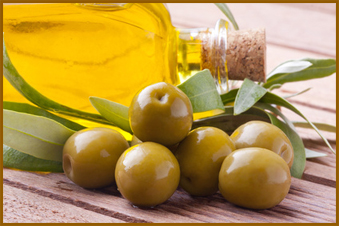
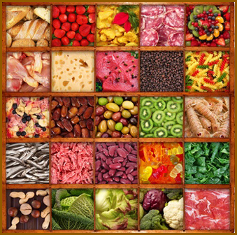

CONSIGLI PER UNA SANA ALIMENTAZIONE
A cura della Dott.ssa Maddalena Cipriani, Biologo Nutrizionista Firenze
Pensi di mangiare in modo sano ed equilibrato?
Segui questi 10 consigli:
- Controlla il peso e mantieniti sempre attivo
- Consuma più cereali, legumi, verdura e frutta
- Scegli grassi di qualità e limitane la quantità
- Limita zuccheri, dolci e bevande zuccherate
- Bevi ogni giorno acqua in abbondanza
- Utilizza poco sale
- Consuma le bevande alcoliche in quantità controllata
- Varia spesso le tue scelte a tavola
- Consigli speciali per persone speciali
- La sicurezza degli alimenti che consumi dipende anche da te
I consigli sopra riportati sono ricavati dalle Linee Guida per una Sana Alimentazione Italiana elaborate dall’Istituto Nazionale di Ricerca per gli Alimenti e la Nutrizione (INRAN).
1. Controlla il peso e mantieniti sempre attivo
Pesati una volta al mese e controlla che il tuo Indice di Massa Corporea (IMC) o Body Mass Index (BMI) ricada nell’intervallo del normopeso. Il BMI è un indice che prende in considerazione il peso dell’individuo in relazione alla sua statura. Viene calcolato dividendo il peso (in kg) per il quadrato dell’altezza (in metri).
L’Organizzazione Mondiale della Sanità (OMS o WHO) ha utilizzato il BMI per classificare delle categorie di peso:
BMI | CATEGORIA DI PESO |
< 18,5 | sottopeso |
18,5 – 25,0 | normopeso |
25,0 – 30,0 | sovrappeso |
30,0 – 35,0 | obesità classe I (moderata) |
35,0 – 40,0 | obesità classe II (grave) |
> 40,0 | obesità classe III (molto grave) |
{kind=link}
Questa classificazione è valida solo per gli individui adulti ed è indipendente dall’età e dal sesso dell’individuo. Questa classificazione non tiene inoltre conto delle percentuali relative di massa magra e massa grassa.
Qualora il tuo peso non ricada nell’intervallo del normopeso consulta il tuo medico curante e rivolgiti ad uno specialista in ambito nutrizionale. Evita le diete squilibrate o molto drastiche del tipo “fai da te”, che possono essere dannose per la tua salute. Ricorda che una buon regime alimentare deve sempre includere tutti gli alimenti in maniera quanto più possibile equilibrata.
Il raggiungimento di un peso corporeo corretto non si ottiene soltanto attraverso un’alimentazione equilibrata ma anche attraverso una vita fisicamente più attiva. Per evitare la sedentarietà, abituati a svolgere le attività quotidiane utilizzando i muscoli piuttosto che le macchine: ad esempio cammina invece di utilizzare l’auto, sali e scendi le scale piuttosto che prendere l’ascensore, svolgi piccoli lavori domestici manualmente.
2. Consuma più cereali, legumi, verdura e frutta
Cereali, legumi, verdura e frutta sono alimenti importanti perché apportano carboidrati (soprattutto amido e fibra) ma anche vitamine, minerali e acidi organici. Inoltre, cereali e legumi sono anche buone fonti di proteine.
In più, il consumo di un’adeguata quantità di frutta e verdura consente di ridurre la densità energetica della dieta. Questo non solo perché il tenore in grassi e l’apporto calorico complessivo sono limitati ma anche perché il potere saziante di questi alimenti è particolarmente elevato.
{kind=link}
Quindi, come comportarsi?
- Consuma quotidianamente più porzioni di verdura e frutta fresca.
- Aumenta il consumo di legumi (ceci, fagioli, piselli, fave e lenticchie) sia freschi che secchi.
- Consuma regolarmente pane, pasta, riso e altri cereali, meglio se integrali.
- Quando puoi, scegli prodotti ottenuti a partire da farine integrali e non con la semplice aggiunta di crusca o altre fibre.
3. Scegli grassi di qualità e limitane la quantità
Per stare bene è necessario introdurre con l’alimentazione una quantità di grassi equilibrata, senza sbilanciarsi né per eccesso né per difetto. Inoltre, qualitativamente i grassi possono essere molto diversi. Infatti varia la loro composizione chimica, ed in particolare quella in acidi grassi. La diversa qualità dei grassi può avere effetti importanti sullo stato di nutrizione e di salute dell’uomo. Infine, nei grassi di origine animale si trova il colesterolo. Questo colesterolo contenuto negli alimenti può concorrere a provocare un aumento dei livelli di colesterolo nel sangue.
{kind=link}
Quindi, come comportarsi?
- Modera la quantità di grassi ed oli che usi per condire e cucinare; utilizza eventualmente tegami antiaderenti, cotture al cartoccio o al vapore.
- Limita il consumo di grassi da condimento di origine animale (burro, lardo, strutto, panna).
- Preferisci i grassi da condimento di origine vegetale, soprattutto olio extravergine d’oliva.
- Usa i grassi da condimento preferibilmente a crudo ed evita di riutilizzare i grassi e gli oli già cotti.
- Non eccedere nel consumo di alimenti fritti.
- Mangia più spesso il pesce, sia fresco che surgelato (2/3 volte la settimana).
- Preferisci carni magre ed elimina il grasso visibile.
- Mangia 2 uova la settimana.
- Scegli preferibilmente latte scremato o parzialmente scremato, che comunque mantiene il suo contenuto in Calcio.
- Tutti i formaggi contengono quantità elevate di grassi: scegli comunque quelli più magri oppure consumane porzioni più piccole.
4. Limita zuccheri, dolci e bevande zuccherate
Il sapore dolce è legato agli zuccheri semplici: glucosio, fruttosio, saccarosio, maltosio e lattosio.
Questi zuccheri semplici si trovano negli alimenti e nelle bevande dolci: fruttosio, glucosio e saccarosio sono contenuti in frutta matura e miele; il saccarosio (comunemente chiamato zucchero da tavola) si ricava per estrazione sia dalla barbabietola che dalla canna da zucchero; il maltosio è contenuto nei cereali; il lattosio è contenuto nel latte.
{kind=link}
Per appagare il desiderio del sapore dolce è preferibile consumare prodotti da forno piuttosto che caramelle, barrette, cioccolata. Questo perché i prodotti da forno contengono, oltre che gli zuccheri semplici, anche zuccheri complessi (amido) e altri nutrienti. Invece il secondo gruppo di alimenti contiene prevalentemente saccarosio e grassi.
Il consumo di zuccheri semplici, specialmente se assunti da soli, provoca in tempi brevi un rapido innalzamento della glicemia (concentrazione di glucosio nel sangue), che tende poi a ritornare al valore iniziale entro un periodo più o meno lungo.
Gli zuccheri semplici possono essere consumati come fonti di energia per l’organismo nei limiti del 10-15% dell’apporto calorico giornaliero.
Quindi, come comportarsi?
- Modera il consumo di alimenti e bevande dolci nella giornata, per non superare la quantità di zuccheri semplici consentita.
- Tra i dolci preferisci i prodotti da forno della tradizione italiana, che contengono meno grasso e zucchero e più amido.
- Utilizza in quantità controllata i prodotti dolci da spalmare sul pane o sulle fette biscottate (quali marmellate, confetture di frutta, miele e creme).
- Limita il consumo di prodotti che contengono molto saccarosio, e specialmente di quelli che si attaccano ai denti, come caramelle morbide o torroni.
5. Bevi ogni giorno acqua in abbondanza
Il nostro organismo è formato principalmente da acqua. Nel neonato l’acqua rappresenta il 75% circa del peso corporeo. Questa frazione percentuale diminuisce fino all’età adulta, quando si stabilizza intorno al 55-60% del peso corporeo. Nell’anziano si ha un’ulteriore diminuzione della quantità di acqua totale corporea, sia come valore assoluto che come frazione percentuale. Le differenze tra i sessi si evidenziano a partire dall’adolescenza. La donna, infatti, avendo una maggiore percentuale di tessuto adiposo (povero di acqua), ha percentualmente una minore quantità di acqua.
{kind=link}
L’acqua corporea è indispensabile per lo svolgimento di tutti i processi fisiologici e le reazioni biochimiche che avvengono nel nostro corpo. Mantenere un giusto equilibrio del nostro “bilancio idrico” (rapporto tra le “entrate” e le “uscite” di acqua) è quindi fondamentale per conservare un buono stato di salute nel breve, nel medio e nel lungo termine.
L’acqua non contiene calorie ed ogni variazione a breve termine del peso corporeo dovuta a maggiore perdita o a maggiore ritenzione di acqua è ingannevole e momentanea.
Quindi, come comportarsi?
- Asseconda sempre il senso di sete e anzi tenta di anticiparlo, bevendo a sufficienza, mediamente 1,5 – 2 litri di acqua al giorno (8 bicchieri): ricorda inoltre che i bambini sono maggiormente esposti a rischio di disidratazione rispetto agli adulti.
- Bevi frequentemente e in piccole quantità. Bevi lentamente, soprattutto se l’acqua è fredda: infatti un brusco abbassamento della temperatura dello stomaco può creare le condizioni per pericolose congestioni.
- Le persone anziane devono abituarsi a bere frequentemente nell’arco della giornata, durante e al di fuori dei pasti, anche quando non avvertono lo stimolo della sete.
- L’equilibrio idrico deve essere mantenuto bevendo essenzialmente acqua, tanto quella del rubinetto quanto quella imbottigliata, entrambe sicure e controllate. Ricorda che bevande diverse (come aranciate, bibite di tipo cola, succhi di frutta, caffè, tè) oltre a fornire acqua apportano anche altre sostanze che contengono calorie (ad esempio zuccheri semplici) o che sono farmacologicamente attive (ad esempio caffeina). Queste bevande vanno usate con moderazione.
- È sbagliato evitare di bere per il timore di sudare eccessivamente (sudare è fondamentale per regolare la temperatura corporea) o di ingrassare (l’acqua non apporta calorie).
- Durante e dopo l’attività fisica bevi per reintegrare prontamente e tempestivamente le perdite dovute alla sudorazione, ricorrendo prevalentemente all’acqua.
- In determinate condizioni patologiche che provocano una maggiore perdita di acqua (ad esempio gli stati febbrili o ripetuti episodi di diarrea), l’acqua perduta deve essere reintegrata adeguatamente e tempestivamente.
6. Utilizza poco sale
Sia il sapore che le proprietà biologiche del sale comune (cloruro di sodio) sono legate principalmente al sodio. In condizioni normali, il nostro organismo elimina giornalmente una certa quantità di sodio, che va reintegrata con la dieta. Tuttavia, non è necessaria l’aggiunta di sale ai cibi, in quanto già il sodio contenuto in natura negli alimenti è sufficiente a coprire le necessità dell’organismo.
Ridurre la quantità di sale che si consuma giornalmente non è difficile, soprattutto se la riduzione avviene gradualmente. Infatti il nostro palato si adatta facilmente, ed è quindi possibile rieducarlo a cibi meno salati. Entro pochi mesi, o addirittura settimane, questi stessi cibi appariranno saporiti al punto giusto, mentre sembreranno troppo salati quelli conditi nel modo precedente.
{kind=link}
Un consumo medio di sale al di sotto di 6 g al giorno (1 cucchiaino), corrispondente ad una assunzione di circa 2,4 g di sodio, rappresenta un buon compromesso tra il soddisfacimento del gusto e la prevenzione dei rischi legati al sodio.
Quindi, come comportarsi?
- Riduci progressivamente l’uso di sale sia a tavola che in cucina.
- Non aggiungere sale nelle pappe dei bambini, almeno per tutto il primo anno di vita.
- Limita l’uso di condimenti alternativi contenenti sodio (dado da brodo, ketchup, salsa di soia, senape).
- Insaporisci i cibi con erbe aromatiche (come aglio, cipolla, basilico, prezzemolo, rosmarino, salvia, menta, origano, maggiorana, sedano, porro, timo, semi di finocchio) e spezie (come pepe, peperoncino, noce moscata, zafferano, curry).
- Esalta il sapore dei cibi usando succo di limone o aceto.
- Scegli, quando disponibili, le linee di prodotti a basso contenuto di sale (pane senza sale, tonno in scatola a basso contenuto di sale).
- Consuma solo saltuariamente alimenti trasformati ricchi di sale (snacks salati, patatine in sacchetto, olive da tavola, alcuni salumi e formaggi).
- Nell’attività sportiva moderata reintegra con la semplice acqua i liquidi perduti attraverso la sudorazione.
7. Consuma le bevande alcoliche in quantità controllata
Le bevande alcoliche sono costituite per la maggior parte da acqua, e per la restante parte da alcol etilico (o etanolo). L’etanolo è una sostanza tossica per l’organismo. L’etanolo viene quindi metabolizzato dal corpo umano non in funzione delle reali esigenze organiche, come accade per i nutrienti, ma con l’unico scopo di essere neutralizzato ed eliminato. Il corpo umano è infatti per lo più in grado di sopportare l’etanolo senza evidenti danni a patto che si rimanga entro i limiti di un consumo moderato.
{kind=link}
Pur non essendo un nutriente, l’etanolo apporta una cospicua quantità di calorie.
L’etanolo viene assorbito già nelle prime porzioni del tratto gastrointestinale e, in modeste proporzioni, persino nella bocca. L’assorbimento è più lento in presenza di cibo, più veloce in presenza di anidride carbonica (soda, spumanti e altre bevande frizzanti). Una volta assorbito, l’etanolo entra nel circolo sanguigno.
La metabolizzazione dell’etanolo avviene sia livello gastrico che epatico. L’enzima presente nello stomaco (alcol deidrogenasi) metabolizza l’etanolo prima che esso venga assorbito e raggiunga il sangue, e quindi l’intero organismo. Gli enzimi presenti nel fegato agiscono invece soltanto dopo che l’etanolo è entrato nel circolo ematico ed ha avuto quindi modo di esercitare i suoi effetti.
Se ne può dedurre che bere alcolici a stomaco pieno è meglio perché fa sì che l’etanolo sia assorbito più lentamente e che diminuisca la quantità che entra nel circolo sanguigno.
La concentrazione dell’etanolo nel sangue dipende da vari fattori: quota ingerita, modalità di assunzione (a digiuno o a pasto), composizione corporea, peso, sesso, fattori genetici, quantità di acqua corporea, capacità individuale di metabolizzare l’alcol, abitudine all’alcol. Le donne, avendo un peso minore, minori quantità di acqua corporea e minore efficienza dei meccanismi di metabolizzazione dell’alcol, sono più vulnerabili ai suoi effetti e, a parità di consumo, presentano un’alcolemia (alcol presente nel sangue) più elevata.
Quindi, come comportarsi?
- Se desideri consumare bevande alcoliche, fallo con moderazione, durante i pasti o, in ogni caso, immediatamente prima o dopo mangiato.
- Fra tutte le bevande alcoliche, dai la preferenza a quelle a basso tenore alcolico (vino e birra).
- Evita del tutto l’assunzione di alcol durante l’infanzia, l’adolescenza, la gravidanza e l’allattamento, riducila se sei anziano.
- Non consumare bevande alcoliche se devi metterti alla guida di autoveicoli o devi far uso di apparecchiature delicate o pericolose per te o per gli altri, e quindi hai bisogno di conservare intatte attenzione, autocritica e coordinazione motoria.
- Se assumi farmaci (compresi quelli che non richiedono prescrizione medica), evita o riduci il consumo di alcol, a meno che tu non abbia ottenuto esplicita autorizzazione da parte del medico curante.
- Riduci o elimina l’assunzione di bevande alcoliche se sei in sovrappeso od obeso o se presenti una familiarità per diabete, obesità, ipertrigliceridemia.
8. Varia spesso le tue scelte a tavola
Una dieta sana ed equilibrata si realizza scegliendo quotidianamente almeno una quantità adeguata (porzione) di un alimento per ogni gruppo alimentare, avendo anche cura di variare abitualmente le scelte nell’ambito di ciascun singolo gruppo.
{kind=link}
I gruppi alimentari sono 5:
- Gruppo cereali, derivati e tuberi: pane, pasta, riso, mais, avena, orzo, farro, patate. Fra gli alimenti di questo gruppo è opportuno utilizzare spesso anche quelli integrali, più ricchi di fibra.
- Gruppo verdura, legumi freschi, frutta. Fra gli alimenti di questo gruppo è opportuno utilizzare gli alimenti di stagione.
- Gruppo latte e derivati: latte, yogurt, latticini, formaggi. Nell’ambito del gruppo sono da preferire il latte parzialmente scremato, i latticini e i formaggi meno grassi.
- Gruppo carne, pesce, uova, legumi secchi. Nell’ambito del gruppo sono da preferire le carni magre e il pesce. Va invece moderato, per quanto riguarda la quantità, il consumo di prodotti a maggiore tenore in grassi, quali certi tipi di carne e di insaccati. Per le uova, infine, un consumo accettabile per soggetti sani è quello di un uovo 2 volte la settimana.
- Gruppo grassi da condimento: olio extravergine d’oliva, olio di semi (grassi di origine vegetale), burro, panna, lardo, strutto (grassi di origine animale). Sono da preferire i grassi di origine vegetale, in particolare l’olio extravergine d’oliva.
Quindi, come comportarsi?
- Scegli porzioni di alimenti appartenenti a tutti i diversi gruppi, alternandoli nei vari pasti della giornata.
9. Consigli speciali per persone speciali
Nell’universo dei normali consumatori esistono alcune categorie che vanno considerate più “a rischio” di carenze nutritive, non a causa di malattie e non necessariamente a causa di cattive abitudini, ma semplicemente per particolari situazioni legate alla loro età o a peculiari condizioni fisiologiche. Queste persone presentano alcuni bisogni specifici che è importante conoscere e ai quali è necessario far fronte con attenzione.
{kind=link}
Come comportarsi in gravidanza?
- Evita aumenti eccessivi di peso e fai attenzione a coprire i tuoi aumentati fabbisogni in proteine, calcio, ferro, folati e acqua: consuma quindi abitualmente pesce, carni magre, uova, latte e derivati e un’ampia varietà di verdura e frutta.
- In particolare, durante tutta l’età fertile abbi cura che la tua assunzione di folati copra i tuoi bisogni. In questo modo ridurrai il rischio di alterazioni del tubo neurale (spina bifida) nel feto.
- Non consumare cibi di origine animale crudi o poco cotti e non assumere bevande alcoliche.
Come comportarsi in allattamento?
- In allattamento le tue necessità nutritive sono perfino superiori a quelle della gravidanza: un’alimentazione variata, ricca di acqua, vegetali freschi, pesce, latte e derivati, ti aiuterà a star bene e a produrre un latte del tutto adatto alle esigenze del neonato.
- Evita quegli alimenti che possono conferire odori o sapori sgraditi al tuo latte o scatenare nel lattante manifestazioni di tipo allergico.
- Evita le bevande alcoliche e usa i prodotti contenenti sostanze nervine (caffè, tè, cacao, bevande a base di cola) con cautela.
Come comportarsi in menopausa?
- Sfrutta l’eventuale aumentata disponibilità di tempo libero per praticare una maggiore attività motoria e per curare la tua alimentazione: impara a non squilibrare mai la dieta e ricordati che, dato che ogni cibo ha un suo preciso ruolo nel contesto dell’alimentazione quotidiana, non devi mai eliminare indiscriminatamente interi gruppi di alimenti a favore di altri.
- Non esagerare con latte e formaggi, nonostante il loro cospicuo contenuto in calcio; preferisci il latte parzialmente scremato e, tra i formaggi, scegli quelli a minor contenuto in grassi e di sale.
- Consuma tutti i giorni e in abbondanza frutta fresca e verdura.
- Usa preferibilmente l’olio d’oliva extravergine.
- Ricordati che anche in menopausa il sovrappeso e l’obesità, la sedentarietà, la stitichezza, il fumo di sigaretta e l’abuso dell’alcol rappresentano importanti fattori di rischio.
Come comportarsi se hai meno di 12 anni?
- Consuma la prima colazione, suddividi opportunamente la tua alimentazione nel corso della giornata e scegli più frequentemente verdura e frutta.
- Evita di eccedere nel consumo di alimenti dolci e di bevande gassate, e di concederti con troppa frequenza i piatti tipici del fast-food all’americana.
- Dedica almeno 1 ora al giorno all’attività fisica e al movimento.
Come comportarsi se hai un’età compresa tra i 12 e i 18 anni?
- Evita di adottare schemi alimentari particolarmente squilibrati e monotoni solo perché “di moda” .
- Fai particolare attenzione, specialmente se sei una ragazza, a coprire i tuoi aumentati bisogni in ferro e calcio: seguire alcune tendenze in voga presso i giovani che portano ad escludere dalla dieta alimenti come carne e pesce (ottime fonti di ferro) e latte e derivati (ottime fonti di calcio) rende molto difficile questa copertura e quella della vitamina B12.
Come comportarsi se hai più di 75 anni?
- Sforzati di consumare sistematicamente una dieta variata e appetibile.
- Evita il ricorso troppo frequente a pasti freddi, piatti precucinati o riscaldati.
- Scegli gli alimenti sulla base delle condizioni del tuo apparato masticatorio e preparali in modo adeguato: tritare le carni, grattugiare o schiacciare frutta ben matura, preparare minestre, purea e frullati, scegliere un pane morbido o ammorbidirlo in un liquido.
- Evita pasti pesanti e fraziona l’alimentazione in più occasioni nell’arco della giornata.
- Fai una buona prima colazione comprendente anche latte o yogurt.
- Conserva un peso corporeo accettabile, continuando a mantenere un buon livello di attività motoria ed evitando di abusare di condimenti grassi e di dolci.
- Riduci i grassi animali, scegli frequentemente il pesce e le carni alternative (pollo, tacchino, coniglio), non esagerare con i formaggi.
- Consuma spesso legumi, frutta e verdura freschi.
- Non eccedere con il consumo di bevande alcoliche e con l’aggiunta del sale da cucina.
10. La sicurezza degli alimenti che consumi dipende anche da te
Gli alimenti hanno sempre contenuto e conterranno sempre, oltre ai nutrienti che servono al nostro organismo, sostanze o agenti potenzialmente tossici (additivi, contaminanti ambientali, contaminanti microbiologici).
Per abbassare il rischio alimentare ad un livello che garantisca una sufficiente sicurezza per il consumo, il consumatore ha la responsabilità dell’acquisto, del controllo e dell’uso corretto del cibo che consuma. Deve essere consapevole e informato correttamente, imparare a leggere e interpretare le etichette, conoscere il prodotto acquistato e le modalità per conservarlo bene, sapere come manipolarlo in cucina e consumarlo a tavola al fine di proteggere se stesso e i suoi familiari da eventuali rischi.
{kind=link}
Quindi, come comportarsi?
- Varia le scelte di alimenti, anche per ridurre i rischi di ingerire in modo ripetuto sostanze estranee presenti negli alimenti, che possono essere dannose.
- In particolare, per anziani, lattanti, bambini e donne in stato di gravidanza, è necessario evitare del tutto il consumo di alimenti animali crudi o poco cotti (uova poco cotte o salse a base di uova crude, carne al sangue, pesce crudo, frutti di mare crudi).
- Fai attenzione alle conserve casalinghe (specie sott’olio o in salamoia), che devono essere preparate rispettando scrupolose norme igieniche; non assaggiare mai una conserva sospetta.
- Non lasciare raffreddare un alimento già cotto fuori dal frigorifero troppo a lungo e senza coprirlo. Andrebbe messo in frigorifero al massimo entro 2 ore dalla cottura (1 ora l’estate). Quando utilizzi avanzi, riscaldali fino a che non siano molto caldi anche al loro interno.
- Non scongelare gli alimenti di origine animale a temperatura ambiente. Se non li puoi cucinare direttamente, riponili in anticipo in frigorifero o mettili a scongelare nel microonde.
- Evita il contatto nel frigorifero tra alimenti diversi, conservando gli avanzi in contenitori chiusi, le uova nel loro contenitore d’origine.
- Non avere un’eccessiva fiducia nella capacità del frigorifero di conservare troppo a lungo i tuoi cibi: non svolge alcuna azione di bonifica e non conserva in eterno gli alimenti.